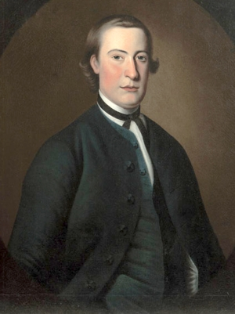

Thomas McIlworth
Between 1757 (perhaps earlier) and 1767, portraitist Thomas McIlworth produced paintings of a number of early Albany residents within a career that included distinctive likenesses of a number of prominent colonial New Yorkers.
He was born in Scotland about 1720 and was the son of limner artist "Andrew McIlwraith" and Anne Mosman (daughter of Scottish portrait painter William Mosman).
 By 1757, he was in New York City where he joined the St. Andrew's Society and became an "assistant" and/or manager there in 1759. By May 1758, he was known as a portrait painter and as "McElworth" had a studio in Broad Street. He advertised in New York City newspapers.
After living in New York for five years, he moved up the Hudson in search of more commissions. Settling in Schenectady, he painted William Johnson, a number of prominent Schenectadians and Albany residents David and Jane Edgar, Catherine Van Rensselaer Schuyler, future signer and Albany native Philip Livingston, John Bradstreet, as well as a much alluded to but elusive portrait of Sir William Johnson. His relationship with Johnson extended beyond soliciting his preferment to naming his son "William Johnson McIlworth."
In October 1760, he married Anna Statia (or Anastasia) Willet of New Jersey. They are thought to have lived for a time in Westchester County. The marriage produced a number of children before her death in 1766. Whether they accompanied him north to Albany County is not known.
He is said to have been appointed the first Schenectady town clerk in 1765.
Thomas McIlworth is thought to have left Schenectady two years later. He was last heard from in Montreal in 1767 and is said to have died in Canada about 1769.
His two surviving children were provided for in the will filed by (possibly) his father-in-law in January 1770.
Although McIlworth probably only visited (or simply passed through) colonial Albany, this sketch is presented in support of his work on early Albany people.
Thought to have been a self-portrait. However, I presently cannot find a source for that notion. Adapted from an online representation from Peter Schweller Fine Art.